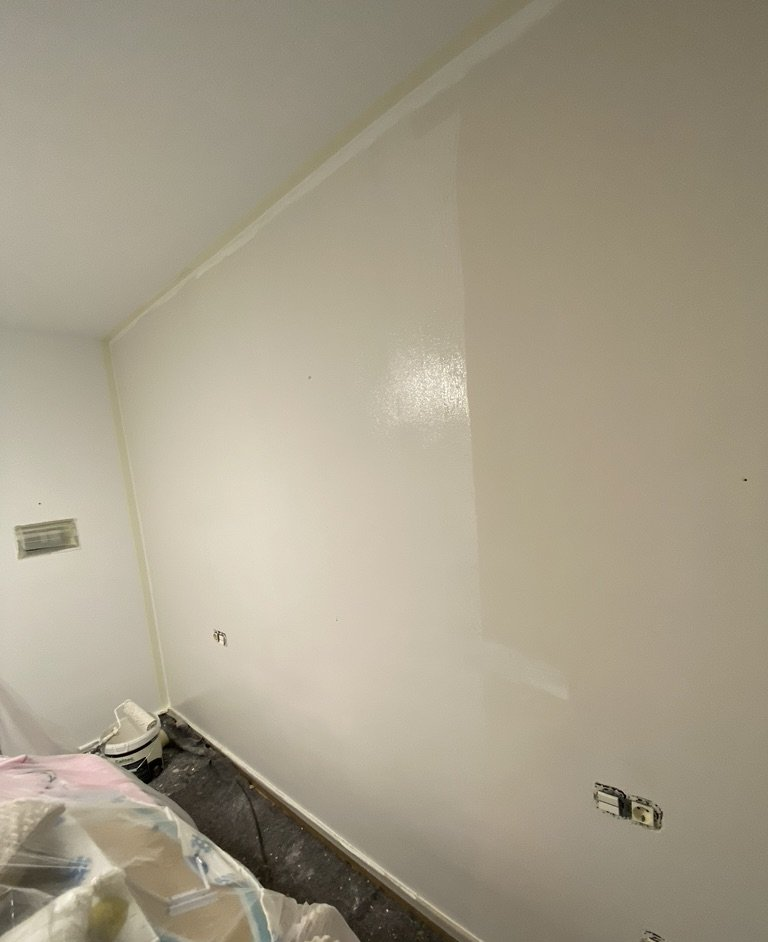

Pintor en Granada Capital,
barrio a barrio
Soy Asis. Llevo desde 2012 pintando pisos, casas y locales por toda Granada capital: del Zaidín al Albaicín. Cada barrio tiene sus casas y sus manías, y después de tantos años me las conozco casi todas. Precio cerrado por escrito, trabajo limpio y factura.
Trabajar en Granada capital no es como trabajar en cualquier sitio. No es lo mismo pintar un piso de los años 70 en el Zaidín, con su gotelé de toda la vida, que una casa del Albaicín con muros de cal que respiran, o un local en el Centro donde no puedes cortar la actividad ni una mañana. Por eso no doy precios al tuntún: voy, lo veo, y te digo lo que cuesta. Y ese precio es el que te cobro. Sin sorpresas al final.
Una buena parte de las llamadas que me entran en la capital son de gente que va a poner el piso en el mercado. Si es tu caso, antes de gastar de más échale un ojo a lo que cuesta y lo que devuelve pintar el piso antes de venderlo: hay cosas que se notan en el precio de venta y otras que te puedes ahorrar tranquilamente.
Cómo es un trabajo conmigo en la capital
Primero voy a verlo. Me das la dirección, quedamos el mismo día o al siguiente, mido, miro el estado de las paredes y te digo el precio allí mismo. Lo dejo por escrito, con lo que incluye y lo que no, y ese es el precio final. Si por el camino aparece algo que no se veía, como una humedad escondida detrás de un mueble, te lo enseño antes de tocar nada.
En un piso vacío suelo tardar de 1 a 3 días, según los metros y si hay gotelé que quitar. Lo tapo todo bien, lijo, doy las manos que hagan falta y lo dejo recogido. Si el piso está habitado, vamos por habitaciones para que puedas seguir viviendo en él.
En Granada hay muchos bloques con comunidad de vecinos. Si el trabajo toca el portal, la escalera o una fachada, hay que avisar a la comunidad, y en eso te echo una mano con el presupuesto por escrito que te van a pedir. Y si lo que quieres es reformar el piso entero, no solo pintarlo, mira reformas integrales y, antes de empezar, si necesitas licencia.

Según lo que tengas entre manos, te servirá más una página u otra: quitar gotelé en los pisos de los 70 y 80, reparar humedades en plantas bajas y casas antiguas, pintura decorativa y estuco para dar carácter, o locales y oficinas si no puedes parar la actividad.
Los barrios de Granada, uno a uno
Cada zona tiene lo suyo. Esto es lo que más me encuentro en cada una.
Servicios en Granada capital
Pintura interior
Pisos, casas y locales
Desde 4 €/m²Quitar gotelé
Paredes lisas perfectas
Desde 12 €/m²Placas de yeso
Tabiques y falsos techos
Desde 25 €/m²Techo con LED
Luz indirecta moderna
Desde 50 €/m²Decorativa
Estuco y efectos
Desde 10 €/m²Locales y oficinas
Sin parar tu negocio
Ver servicio →Lo que me preguntan en Granada
¿Cuánto cobra un pintor por hora en Granada?
Entre 15 y 25 € la hora, según la experiencia y el tipo de trabajo. Pero te voy a ser sincero: yo casi nunca trabajo por horas. Te doy un precio cerrado por m² o por el trabajo completo, así sabes lo que pagas desde el principio, tarde yo lo que tarde. Me parece lo más justo para los dos.
¿Trabajáis en casas antiguas del Albaicín o el Realejo?
Sí, y son de los trabajos que más me gustan. Los muros de cal y yeso no se pueden tratar como un piso moderno: hay que sanear y usar pinturas transpirables, o la humedad vuelve en un año. Llevo desde 2012 haciéndolo.
¿Pintáis pisos de estudiantes entre alquiler y alquiler?
Es de lo que más hago en la capital. Piso completo en 1-3 días, precio cerrado y factura. Si eres propietario de varios pisos, hablamos y te hago precio especial.
¿Cuándo puedes venir a dar el presupuesto?
En Granada capital, normalmente el mismo día que me llamas o al siguiente. Voy, mido, y te doy el precio en el momento. Gratis y sin compromiso.
¿Pintamos tu piso en Granada?
Llámame o escríbeme por WhatsApp, dime tu barrio y me paso a verlo. Presupuesto gratis el mismo día.
Te puede interesar:
Pintor en Granada ·
Quitar Gotelé ·
Precio Pintar Piso ·
Placas de Yeso Granada ·
Colores de Moda 2026
Cinturón de Granada:
Armilla ·
La Zubia ·
Dúrcal ·
Maracena
¿Y cuánto me costaría a mí?
Calcula el precio de pintar tu casa en 2 minutos — sin compromiso y sin que nadie te llame.
Calcular precio gratis →